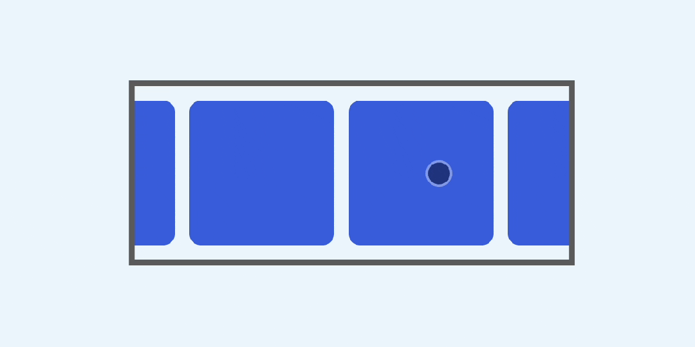
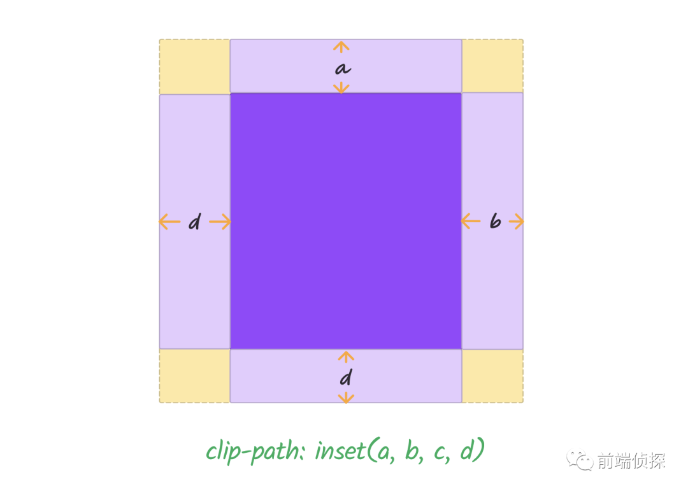
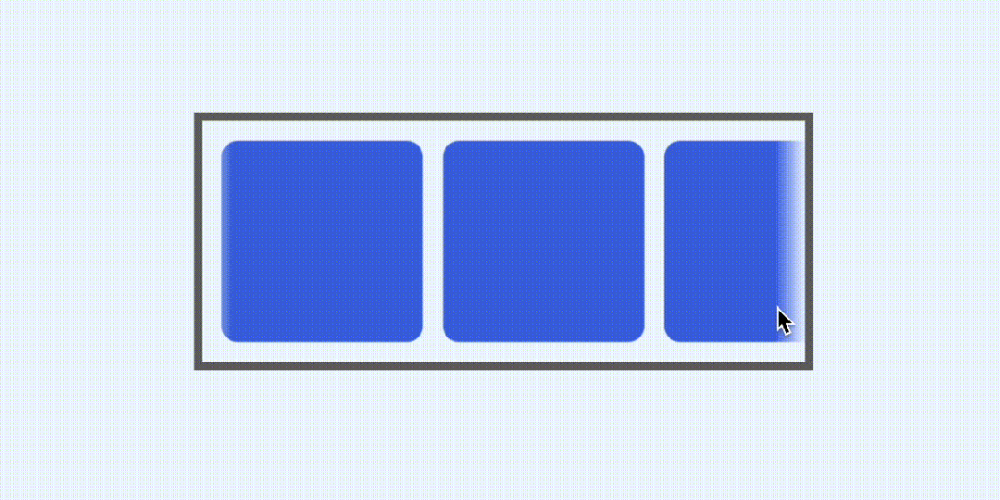

裁剪的3种方式，CSS 如何隐藏移动端的滚动条？
2023/09/11 · YinHao在移动端开发中，经常会碰到需要横向滚动的场景，例如这样的
但很多时候是不需要展示这个滚动条的，也就是这样的效果，如下

你可能想到直接设置滚动条样式就可以了，就像这样
::-webkit-scrollbar {
display: none;
}
目前来看好像没什么问题，但在某些版本的 iOS 上却无效（具体待测试），滚动条仍然出现。
那有没有其他方式可以解决这个问题呢？下面介绍几个方法
一、通过 overflow 隐藏
既然有时候修改滚动条样式无法解决，我们可以想办法把它隐藏。
下面是一个横向滚动列表
<div class="list">
<div class="item"></div>
<div class="item"></div>
<div class="item"></div>
<div class="item"></div>
<div class="item"></div>
<div class="item"></div>
<div class="item"></div>
</div>
简单修饰一下，让这个列表可以横向滚动
.list {
display: flex;
overflow: auto;
gap: 10px;
padding: 10px;
}
.item {
width: 100px;
height: 100px;
background: royalblue;
border-radius: 8px;
flex-shrink: 0;
}
效果如下

通过 「overflow」 隐藏的方式很简单，我们需要一个父级
<div class="wrap">
<div class="list"></div>
</div>
然后，将列表底部padding设置的稍微大一些，比如
.list {
/**/
padding-bottom: 20px;
}
可以看到列表下方的距离变大了，滚动条也更靠下了，效果如下

如何让整体尺寸仍然保持原有呢？答案是借助负 「margin」，比如之前底部 「padding」 是10，现在改成了20，所以需要-10的 「margin」
.list {
/**/
margin-bottom: -10px;
}
这样整体尺寸就正常了，不过滚动条仍然是可见的，只是出去了

最后只需要设置父级的 「overflow」 为隐藏就可以了
.wrap {
/**/
overflow: hidden;
}
原理示意如下

这样就完美隐藏了滚动条

当然，不仅仅是 「overflow」，下面这种方式也可以实现超出隐藏
.wrap {
/**/
contain: paint;
}
这个属性比较新，可以控制元素在容器内的绘制规则，了解一下即可
https://developer.mozilla.org/zh-CN/docs/Web/CSS/contain
二、通过 clip 裁剪
第一种方式需要借助父级的超出隐藏，需要额外一层，好像有点麻烦，有没有办法自身也可以裁剪呢？
那就是 「clip-path」
https://developer.mozilla.org/zh-CN/docs/Web/CSS/clip-path
相信大家对这个属性应该很熟练了，非常直观的裁剪属性。
比如这种情况，只需要把滚动条的那一部分裁剪掉就可以了，这里要用到clip-path的inset方法
clip-path: inset();
这里简单介绍一下。「inset」 最多可以传 4 个参数，分别表示裁剪掉距离上、右、下、左的部分

所以，要把滚动条隐藏就很简单了，只需要把下方的裁剪距离设置大于滚动条尺寸的值就行了，这里就用10px
.list {
clip-path: inset(0 0 10px);
}
效果如下

一行代码轻松解决~
三、通过 mask 遮罩
其实和 「clip」 思路是一致的，只不过实现方式不一样。
关于 mask 遮罩，之前在多篇文章中都有提到，非常实用的小技巧，主要原理是显示遮罩图片不透明的部分，透明的则会被裁剪，示意如下

回到这里，我们只需要绘制一个不包含滚动条部分的纯色渐变就行了，可以直接绘制一个纯色渐变，然后设置背景尺寸，如下
.list {
-webkit-mask: linear-gradient(red, red) 0 0/100% calc(100% - 10px) no-repeat;
}
原理示意如下

也能很好的隐藏滚动条

除此以外，mask 还可以很好的实现滚动边界渐隐的效果，只需要叠加一层从透明→纯色→透明的渐变就行了
.list {
-webkit-mask: linear-gradient(
to right,
transparent,
red 15px calc(100% - 15px),
transparent
), linear-gradient(red, red) 0 0/100% calc(100% - 10px) no-repeat;
-webkit-mask-composite: source-in;
}
就可以得到这样的效果

由于是遮罩实现，并不是简单的颜色覆盖，所以换一种背景颜色也可以很好的融合

以上所有完整 demo 可以查看以下链接
[1] CSS scroll hidden (juejin.cn)： https://code.juejin.cn/pen/7276721196161302588
[2] CSS scroll hidden (codepen.io)： https://codepen.io/xboxyan/pen/GRPrzeO